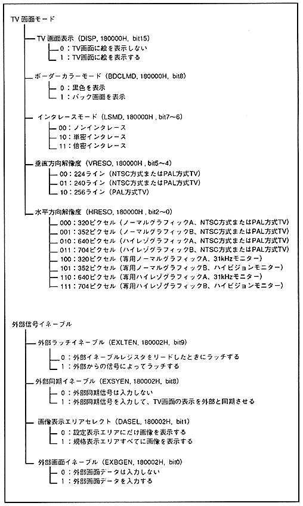

Return to previous page ｜ Return to menu ｜ Go to next page
-
■ 15.3 Bit configuration diagram
- Each bit of the register is related to other bits. The bit configuration diagram by scroll screen and priority function is shown below.

Return to previous page ｜ Return to menu ｜ Go to next page